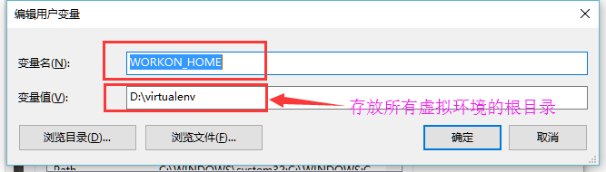
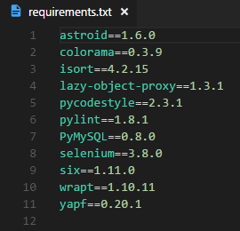
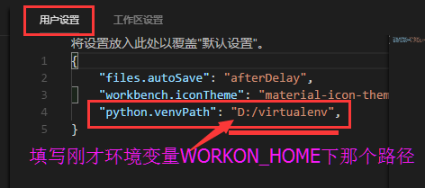
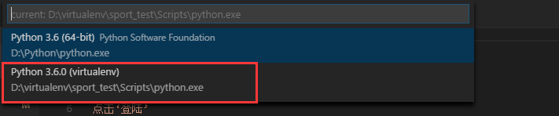

VirtualEnv and VirtualEnvWrapper Briefer Course
内容包括了虚拟环境的搭建、使用、迁移
什么是VirtualEnv
VirtualEnv = Virtual environment 顾名思义就是虚拟环境的意思
VirtualEnvWrapper:是对前者提供了一些便利的命令行上的封装
为什么使用VirtualEnv
VirtualEnv用于在一台机器上创建多个独立的python运行环境,它的优点:
- 可以让每一个python项目单独使用一个环境，而不会影响python系统环境，也不会影响其他项目的环境
- 可以选择不同的Python版（系统已安装的）或Packages
- 可以在没有root权限的情况下安装新套件，而且它们之间互不影响
如何食用VirtualEnv
只针对win10下
安装
1 | #virtualenv安装 |
注意:virtualenvwrapper需要配置所有虚拟环境的存放目录:WORKON_HOME

VirtualEnv食用
虚拟环境的创建:
- 默认Python版本创建虚拟环境:
- cd到需要创建虚拟环境的目录
- 创建虚拟环境
1 | virtualenv <env_name> |
- 自定义Python版本创建虚拟环境
- 首先安装需要的Python版本
- cd到需要创建虚拟环境的目录
- 指定virtualenv中的python版本,并创建虚拟环境
1 | virtualenv --no-site-packages --python=2.7 <envname> |
虚拟环境的激活:
- cd到你创建的虚拟环境目录下
- 激活环境
1 | Script\activate (or Script\activate.bat) |
这时候你可以看到命令行前面多出了你虚拟环境的名字,代表成功激活虚拟环境
虚拟环境的退出:
直接在该环境中使用
1 | deactivate |
删除虚拟环境:
直接删除虚拟环境所在的文件夹就可以
1 | rm -r <target envname> |
VirtualEnvWrapper食用
VirtualEnvWrapper下创建的虚拟环境默认都是干净的,就像Virtualenv下执行了–no-site-packages命令一样
创建虚拟环境:
1 | mkvirtualenv <envname> |
列出已有的虚拟环境:
1 | workon |
切换虚拟环境:
1 | workon <envname> |
退出虚拟环境:
1 | deactivate |
删除虚拟环境:
1 | rmvirtualenv <envname> |
VSCode下虚拟环境的迁移
首先配置Virtualenv
目标电脑必须安装了相同的Python版本以及pip和Virtualenv,然后根据情况选择:
方法一:
- 当没有网或者网络不好的情况下
- 直接将本地env1里的文件copy到目标电脑env2下,可以正常使用,显然这是不好的…
方法二:
- 进入需要迁移的虚拟环境里
1 | pip freeze > requirements.txt |
将包依赖信息保存在requirements.txt文件中,文件结构如下图:

- 把该文档copy到目标电脑虚拟环境目录下,执行
1 | #进入虚拟环境 |
然后配置VSCode
- 首先配置虚拟环境根目录

- 重启VSCode
- 打开VSCode控制面板
1 | ctrl+shift+P |
- 输入
1 | Python:Select Interpreter |
- 选择虚拟环境

- 至此,大功告成